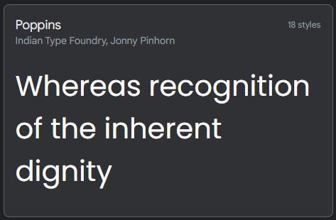
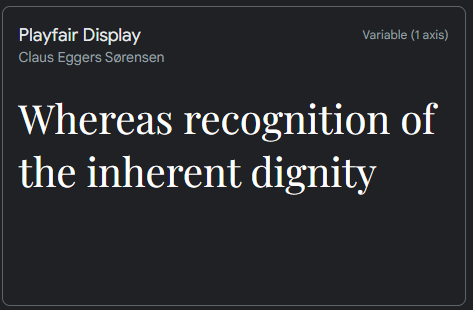

Aesthetic Goal:
The goal of the website is to inspire the user by curating a visually captivating and immersive online experience that seamlessly navigation and blends in design, using minimalism, and modern functionality.
Colour:
Orange: In my website, I use the colour orange on crucial words and some aspects of the website. This is because the colour orange is highly visibility and draws the user’s attention, as orange is a bright and attention-grabbing colour. It is used sparingly, so it can direct a user's attention to specific keywords or specific actions leading the user drawn to those aspects on the page so they will want to view it or click on it. The use of orange is also for a contrasting effect in my web design, as the contrast is essential for readability, guiding the user, and highlighting the user’s attention to the elements. Since the primary colour of the website is focused on darker colours mainly black and grey, using orange for keywords makes it stand out. This allows for the encouragement of action and distinction of my hyperlinks. This is because orange is usually a bright colour and it allows for elements to stand out which in return encourages the users to click the elements with the orange colour.
The use of the colour orange also creates a form of branding towards the website while allowing for an aesthetic to be created. This is because the colour is warm and comforting as it is associated with the sun and fire, so it makes the website feel inviting and cosy. Because of this, it will draw an emotional response from the users the colour has connotations of happiness, creativity and encouragement thus creating a positive feeling on the website and allowing a brand to be built to the website.
Black & White: The use of black and white colour on the website mainly for the website’s backgrounds and text colours is for a contrast that allows for readability. The white on a black background or visa-versa, creates a strong contrast, which makes the content more legible and eye-catching, thus allowing so the user can focus on the content as it minimizes distractions on the website. The use of black and white colours is to reduce eye strain for users. Contrasting these two colours allows the user to focus on the content while making sure the eye isn’t drawn away as it colour is too bright and strains their eye making it so they have to look away from the screen.
The use of black and white is also aiding in establishing the brand of the website, as the black and white colours are usually associated with luxury brands, thus making it seem as if the website is conveying something high-end.
These colours allow for the aesthetic of my website to be simplistic and timeless. As these colours are commonly used and they never go wrong if used correctly. It allows for a simple design on the website so that it doesn’t overcomplicate the website and that users can understand what is happing on the website.
Fonts:
Poppins: The font Poppins has a modern-day appearance to it, making it seem clean allowing it to fit into all types of designs on the website. I have used Poppins for large bodies of text as well as for certain headings. This is because this font is readable and consistent. As its design allows for all text to be easily readable as its appearance is consistent among each character. I have used Poppins as it has a modern appearance, as Poppins has acontemporary aesthetic, which makes the website seem fresh and modern, making it so the user is more engaged. The Poppin font works well for data visualisation as its modern appearance makes it appealing and it sets a neutral tone. This is important so that the font doesn't add any unintended bias or emotion to the data being presented so that the user to make their own decision based on what is being presented.
This font is also effective for the brand of the website as it creates a professional appearance. As Poppins offers a clean and professional appearance because of its geometric design, making the data visualization appear trustworthy. Creating a website that feels safe to use and trust the information on it.
Playfair Display: The font Playfair is aesthetically pleasing as it is elegant in its design and provides a high sense of elegance to a website. This is because this font is associated with high-end brands. Which will make the user feel as if the content on this website is worthy of being read. Because of this elegance in its design, it makes the content feel as if it was thoughtfully presented. The use of Playfair allows for content to be more memorable. The uniqueness of the font will make data visualization more memorable to viewers, allowing it to capture the user’s attention while making sure they remember the content.
Why use these fonts together?
Using these two fonts together creates a contrasting effect: This is so that each font type can stand out making it so that certain elements are highlighted and use these two types of font is because they are similar in a way and they don’t clash with each other, rather making element eye-catching. It also creates a. sense of hierarchy. As the Playfair Display has a decorative and clean feel, works well for headings. On the other hand, "Poppins," being a more neutral and straightforward font, is excellent for body text or smaller text elements, making it so text elements stand out. They also both work together in setting a mood and tone to create an aesthetic and brand for the website. As Playfair Display has a sense of elegance due to its design, while "Poppins" offers a fresh, modern feel. When combined, they can create a mood that is both modern and timeless.
Negative Space:
On my website, I have to it so that each section is displayed to show what is important and it surrounds by negative space. This is for readability and comprehension on the website. The use of negative space makes content, with the text, more legible, easier to understand and easy to locate. The space between the element of done in a way that allows the user to easily read the content without losing track of where they are in the text and it is space so that the content on the website is easy to understand.
The use of negative space on my website allows for focus and attention to the content provided. The negative space is used to draw the viewer's attention to specific content or elements, such as the way to separate each section on the page allowing the user to view each section separately allowing them to focus on that specific content. By removing clutter, allowing having what is necessary and using the negative space, the main message or action of the website becomes clearer. The use of negative space on my website creates a sense of balance. As the negative space creates a balance between design elements, ensuring that the page doesn't feel too crowded or overwhelming. This creates a professional and clean aesthetic and brand. As the websites use negative space to appear more professional and trustworthy. Because of this, it allows for an enhanced user experience. The design incorporates negative space to improve the overall user experience. It provides visual rest for the user's eyes, making it easier for users to navigate and interact with the site.
Page Layout:
Each webpage follows a simple design structure but is also unique as to is dependent on the content of each webpage. Here we will view and analyse the webpage layout and structure of each page.
Common features for page layout:
The responsive design of the website is considered with the variety of devices (like smartphones, tablets, and desktops) used to browse the web, the layout and design are made adaptable to fit these types of devices. The website uses visual elements, mainly images now to enhance and look and feel of the website. The footer is found at the bottom of a page, it often contains links to my GitHub code and to the link to the website itself.
Homepage:
This webpage starts with the header. The header is at the top of a webpage, it contains the website's logo and name, and the main navigation for the homepage is on the header as it allows the user to click on it to be taken to this section on the homepage. On the header, I have included a search bar with I would like to make functional some that the use will be able to search for keywords and take them to that aspect of the website. The header of the website included the navigation. The content area is the main section of the page. Here it is present to display a part of the information provided in that aspect of another webpage and it includes a call of action, which is a button which will take the user to that page when click if they want to view that webpage. This webpage uses columns in some aspects of the content area. The column-based layouts organize the content of the blog and design sections. two-column but I will increase depending on the increase in the article to be presented in those sections.
Blog/Design Selection Page:
This webpage starts with the header. The header is at the top of a webpage, it contains the website's logo and name, and the main navigation for the website is on the header as it allows the user to click on it to be taken to that webpage. On the header, I have included a search bar with I would like to make functional some that the use will be able to search for keywords and take them to that aspect of the website. The header of the website included the navigation for the entire website as it allows the user to move from one webpage to another. The content area, content area for this webpage is structured firstly to indicate to the user what they are looking at just after the header stating what webpage they are on. Thus making sure the user knows their location on the website. After this, I use a columns system to display the different articles which are presented in this section. They are separated by negative space allowing so that the users can easily identify the different articles and they can choose which one they want to view.
Blog/Design Article Page:
This webpage starts with the header. The header is at the top of a webpage, it contains the website's logo and name, and the main navigation for the website is on the header as it allows the user to click on it to be taken to that webpage. On the header, I have included a search bar with I would like to make functional some that the use will be able to search for keywords and take them to that aspect of the website. The header of the website included the navigation for the entire website as it allows the user to move from one webpage to another. The content area, content area for this webpage is structured firstly with visual content as it makes sure that the users have an image to view first, this is mainly just so the user isn’t overwhelmed with all the text, then after it breaks down the text into sub-heading if needed and displays the texts.
Significant Design Decisions
Smooth Transitions:
The smooth transition allows for improved user experience as Smooth transitions make the website feel more intuitive and seamless, which improves the user experience. When pages transition smoothly, it is easier for users to navigate and explore the site. Thus, allowing engagement from the Smooth transitions increases user engagement by keeping visitors on the site longer. When pages transition smoothly, it can encourage the user to explore more content and stay engaged with the site. To give a Visual appeal, smooth transitions are visually appealing and make a website feel more dynamic and interesting. When the pages transition smoothly, it creates a sense of movement and animation that adds visual interest to the site. Overall, using smooth transitions will improve the user experience, increase engagement, and add visual interest.
Homepage Design Choice:
Today, everyone wants a quick and effective way to view items as we have short attention spans. The reason why this works is that it allows the user it first see what they are going to view from the homepage and then the user will be able to decide whether they want to view that based on the small aspects that have been presented to them from the homepage.